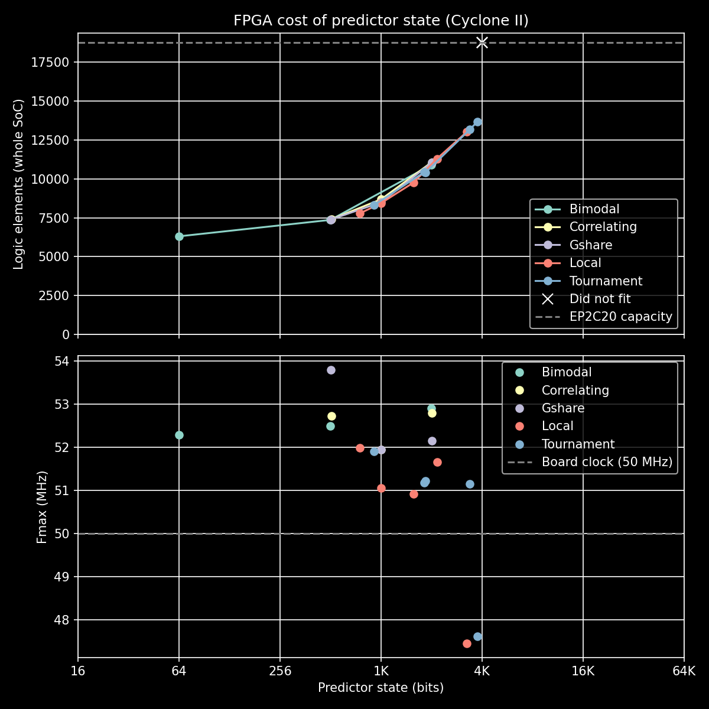

Personal project - 2026 - GitHub
This is a 5-stage, in-order RISC-V (RV32I) processor that I wrote in Verilog and run on the Cyclone II FPGA of an Altera DE1 board. It started as a textbook five-stage pipeline and grew, one verified step at a time, into a processor with full forwarding, a choice of five branch predictors, and an 8 KB instruction cache and 16 KB data cache in front of the board's 512 KB of off-chip SRAM. It runs at 50 MHz and uses every one of the FPGA's 52 block RAMs.
Most of the work went into making sure the design was right rather than adding features. A pipeline can compute the correct answer and still stall when it doesn't need to, and a design that passes simulation can still be built differently by the synthesis tool. Every change is checked against an independent reference model in simulation, and the board's own performance counters are read back over JTAG and compared with a cycle-exact prediction.
| ISA | RV32I (no CSRs, traps or interrupts) |
| Pipeline | IF, ID, EX, MEM, WB, in order |
| Clock | 50 MHz, Fmax about 52–54 MHz |
| Branch prediction | Bimodal by default; correlating, gshare, local or tournament chosen at build time |
| Caches | 8 KB icache + 16 KB dcache, direct mapped, 16-byte lines, write-back dcache |
| Main memory | 512 KB asynchronous SRAM on the board |
| FPGA use | ~6,300 of 18,752 logic elements, all 52 M4K block RAMs |
The five stages are the classic ones. IF selects the next fetch address and sends it straight into the instruction cache, whose block RAM latches the address and returns the instruction on the next cycle, in ID. ID decodes, reads the register file and predicts branches. EX forwards operands, runs the ALU and resolves branches. MEM accesses the data cache, and WB aligns load data and writes the register file.
Each pipeline register carries a valid bit. A flushed or stalled slot becomes a bubble: its valid bit goes low and its other fields keep whatever stale values they held. That is harmless as long as every side effect (register writes, memory accesses, forwarding, redirects and predictor training) is qualified by the valid bit of the stage that causes it, and that became the main rule of the design.
The board can run the processor at 50 MHz, 25 MHz, about 1.5 Hz, or one cycle per button press.
Rather than generating slower clocks, everything runs on the 50 MHz clock and the speed setting drives a clock
enable. When the enable is low every pipeline register holds, valid bits included, so the processor simply pauses.
This later became the mechanism for cache misses. The pipeline's enable is
clk_en && !dc_busy, so a data cache miss freezes the pipeline exactly as a slow clock does,
while the caches and the SRAM controller keep running on every edge.
Most data hazards are handled without stalling. Results are forwarded from MEM or WB into EX, with MEM taking
priority since it holds the younger write. The value forwarded is the final write-back value, which is resolved in
EX, so jal and lui forward pc + 4 and the immediate rather than the
raw ALU output. The register file writes through, so an instruction in ID sees a value being written back in the
same cycle.
| Hazard | Handled by | Cost |
|---|---|---|
| ALU result used by the next instruction | Forwarding from MEM or WB into EX | 0 cycles |
| Load result used by the next instruction | Load-use interlock | 1 cycle |
| Store right after the load that produces its data | Load-to-store forwarding in MEM | 0 cycles |
Branch mispredict or jalr | Redirect from EX | 1 cycle |
The only stall is a load followed immediately by an instruction that uses the loaded value. The interlock compares register numbers only for the operands an instruction actually reads, so immediate bits that happen to look like a register number never cause a false stall. A store directly behind the load that produces its store data doesn't stall at all: when the store reaches MEM the load is already in WB, so the store takes its data from there.
By default, branches are predicted in ID by a table of 32 two-bit saturating counters indexed by the PC, and resolved in EX by a dedicated comparator, kept outside the ALU so the compare doesn't wait on the shifter and result mux. JAL is always taken in ID and JALR is resolved in EX. A correctly predicted taken branch costs nothing and a misprediction costs one cycle. On an insertion sort benchmark the predictor cut flushes from 4,519 to 1,568 and the run from 30,841 to 27,892 cycles. Four other predictors can be built in its place, and the branch predictor study below compares all five.
I chose to predict in ID rather than IF. Predicting in IF would put the predictor's lookup on the same path as the redirect from EX into the next fetch address, which was already the longest path in the design. In ID the instruction has been decoded, so the predicted target is just the PC plus the immediate.
The FPGA's 52 block RAMs (M4Ks) hold only about 26 KB, so main memory lives in the board's 512 KB SRAM chip and the block RAMs serve as caches in front of it. The low 256 KB of the SRAM holds code and the high 256 KB holds data. Both caches are direct mapped with 16-byte lines, which splits an 18-bit address as follows:
| Cache | Lines | Tag | Index | Offset (word, byte) |
|---|---|---|---|---|
| icache, 8 KB | 512 | bits 17–13 | bits 12–4 | bits 3–0 |
| dcache, 16 KB | 1,024 | bits 17–14 | bits 13–4 | bits 3–0 |
The data cache is write-back and allocates on a store miss. Its data is split into four byte lanes, each a separate
RAM holding one byte of every word, so a byte or halfword store enables only the lanes it writes and finishes in a
single cycle. A load reads the data RAM on its way from MEM to WB, so a hit costs nothing extra. A store writes on
the edge leaving MEM, so the cache has to know whether it hits before that edge: the tag RAM is addressed with the
ALU result while the access is still in EX, and the tag compare happens in MEM. A miss raises busy,
which freezes the pipeline.
Each byte lane is a true dual-port RAM. One port belongs to the pipeline and is addressed directly by the EX/MEM pipeline register, which keeps that address path a plain wire. The other belongs to the cache controller. On a miss the controller writes back a dirty victim, reads the new line from SRAM, writes it into the lanes one word per cycle and writes the tag last, so a half-written line is never valid. A miss costs 42 cycles, or 82 when a dirty line has to be written back first.
The instruction cache is read only. Its tags and instructions are read together and checked in ID, and a miss holds the fetch and sends a bubble into EX while the older instructions keep going. It powers up already holding the program from the FPGA's configuration image, so a program of up to 8 KB runs without anything having to load the SRAM first.
The SRAM chip has a 16-bit data bus, so the controller moves a 16-byte line as eight 16-bit beats. Each beat has a full cycle of setup, a two-cycle strobe and a full cycle of hold, with every SRAM pin driven from a register in the FPGA's I/O cells. A line takes about 35 cycles, a margin I chose for bring-up, and the board's memory test measures 21.7 MB/s. The two caches share the controller through an arbiter that serves the data cache first, since its miss freezes the whole pipeline while an instruction miss only holds the front end.
| Block RAM use | Data | Tag and valid | Dirty | Total |
|---|---|---|---|---|
| dcache, 16 KB | 32 | 2 | 1 | 35 |
| icache, 8 KB | 16 | 1 | – | 17 |
| All | 52 of 52 |
The two-bit predictor was a starting point, so I added four more behind the same interface and compared all five
on 19 benchmark programs, at every size from 8 bits of state to 36 Kbit. The predictor and its table
sizes are chosen at build time in defines.vh. Each one looks up in ID, carries what it read to EX in a
pred_meta field, and trains in EX when the branch resolves, so training always updates the counter the
prediction came from.
| Predictor | Chooses a two-bit counter using | State bits |
|---|---|---|
| Bimodal | The branch's PC | 2·2i |
| Correlating | The PC, concatenated with the last h branch outcomes (the global history) | 2·2i+h + h |
| Gshare | The PC, XORed with the global history | 2·2i+h + h |
| Local | The branch's own last l outcomes, from a table of 2i histories selected by the PC | 2i·l + 2·2l |
| Tournament | Local and gshare side by side, with a two-bit chooser per PC slot picking one | Both, plus 2·2i |
Gshare and the tournament update their global history speculatively: a branch shifts its prediction into the history as it enters EX, and a mispredict restores the history it was predicted with plus its real outcome. Correlating shifts the history in when the branch resolves.
Rather than simulate the RTL at all 1,439 configurations, I wrote a Python model of each predictor and replayed every program's branches through it. The programs come from Embench, CoreMark and riscv-tests, 3.35 million instructions and about 929,000 conditional branches in all, and each starts from a reset predictor as it would on the board. The models are held to the RTL. In every directed, random and benchmark test the RTL's flush count must equal the model's, every one of 42,000 predictions matches at 14 non-default sizes, and five larger builds ran the full benchmarks with their flushes matching the model exactly. For the hardware cost I compiled the whole design in Quartus at a selection of sizes.
Accuracy is measured in mispredicts per thousand instructions (MPKI), totalled over all 19 programs. A mispredict costs one cycle in this pipeline, so MPKI is also the number of cycles a predictor loses per thousand instructions.
RV32I has no multiply or divide instructions, so the compiler turns every a * b into a call to
__mulsi3 in libgcc, GCC's support library, and every division into __udivsi3 or one of its
relatives. __mulsi3 is a shift-and-add loop with two branches per bit of the multiplier: one tests the
bit and one checks whether any bits are left. The bit test goes whichever way the data says, so it is only as
predictable as the operands. These routines account for 59% of the instructions executed, 74% of the conditional
branches and 87–90% of every predictor's mispredicts.

On this code, comparing predictors mostly means comparing how well they guess multiplier bits, which a processor with the M extension never has to do. So every configuration also runs on a second version of each branch stream, with those routines' branches removed and their instructions dropped from the count. That approximates the same programs on a core with hardware multiply and divide. Below, as built is the first workload and without libgcc is the second.


Any two-bit counter beats a static guess by a wide margin. Predicting backward branches taken and forward branches not taken gives 69.5 MPKI, and the default bimodal predictor, only 64 bits of state, gives 50.2, 28% fewer. Without libgcc the gap is wider, 44.3 against 16.1, or 64% fewer. Bimodal then stops improving at about 512 counters (49.65 MPKI). On programs this small its table isn't limited by aliasing; it simply can't learn patterns.
The predictors that use history pull ahead from about 1 Kbit, and the tournament is the best or tied at every size from there up. At 1 Kbit without libgcc it reaches 11.9 MPKI, against 12.5 for local, 14.0 for gshare, 14.4 for correlating and 14.75 for bimodal. Very small budgets are the exception: 64 bits split three ways doesn't work, and the bimodal predictor (50.2) beats every 64-bit tournament (54.3).
| Budget | Bimodal | Correlating | Gshare | Local | Tournament |
|---|---|---|---|---|---|
| 256 bits | 49.8 / 15.2 | 48.8 / 16.7 | 48.9 / 16.8 | 48.3 / 15.3 | 48.1 / 15.6 |
| 1 Kbit | 49.7 / 14.8 | 46.8 / 14.4 | 46.5 / 14.0 | 44.8 / 12.5 | 44.2 / 11.9 |
| 4 Kbit | 49.7 / 14.8 | 46.0 / 13.5 | 45.9 / 13.2 | 40.2 / 11.3 | 39.6 / 10.1 |
| 32 Kbit | 49.7 / 14.8 | 43.5 / 12.6 | 44.1 / 12.5 | 27.7 / 10.6 | 27.1 / 9.0 |
Best MPKI at each budget, as built / without libgcc. These are model results; not every size fits the FPGA (see the hardware cost below).


As built, local looks like the best single predictor at large sizes, and it keeps improving as each branch's
history grows. With 32 histories, 8 bits of history give 44.9 MPKI, 13 bits 28.2 and 14 bits 24.7. Without libgcc
the same three configurations give 12.7, 11.5 and 11.6, so the extra length buys almost nothing. The local history
of the bit-test branch in __mulsi3 is the sequence of multiplier bits it has just seen, and a long
enough history recognizes which multiplier the loop is working through. That is a real effect on this processor,
but it disappears with a hardware multiplier, so I wouldn't size a predictor around it.


Correlating and gshare differ only in how they combine the history with the PC. Correlating concatenates the two, and my gshare XORs the history into the top bits of the index, and they stay within 3% of each other at every size. The textbook gshare XORs the history into the low bits instead, and that is clearly worse here. At the built size, 512 counters with 4 bits of history, it has 17% more mispredicts as built (54.2 against 46.2 MPKI) and 47% more without libgcc (19.8 against 13.5). Even with its best history length at each size, it stays 16–18% behind without libgcc from 1 Kbit up. The low index bits are what tell neighbouring branches apart, and in small programs the neighbours are the hot branches, so XORing the history into those bits makes the busiest branches collide.
The best history length grows with the table. For gshare as built it is 3 bits at 256 counters, 4 at 512, 5 at 1K and 13 at 8K–16K, and the built default of 4 bits at 512 counters is the best for its size. Speculative history, on the other hand, is worth little in a five-stage pipeline: without libgcc it saves at most about 0.3 MPKI at any size. A branch resolves one stage after it is predicted, so only one branch can be in flight when the next one is predicted, and a history updated at training is at most one outcome behind.

The caches use all 52 block RAMs, so every predictor bit is a flip-flop in a logic element. Each bit of state costs about 2.3–2.4 logic elements, so growing a bimodal table from 64 to 2,048 bits takes the whole design from 6,310 to 10,906. None of the flat 4 Kbit tables (bimodal, correlating and gshare) fit the chip: the fitter needed 1,225–1,227 logic array blocks of the 1,172 available. The largest design that fit was a 3,843-bit tournament, at 13,683 logic elements.
Timing splits the predictors into two groups. The flat tables kept 0.75–1.4 ns of slack (51.9–53.8 MHz) at every size that fit, since their lookup isn't the slowest path. The two-level predictors don't: in local, the branch's history selects the counter, and the counter feeds the next-PC logic. Local's slack falls from 0.77 ns with 32 histories to 0.41 ns with 64 and −1.08 ns with 128 (47.4 MHz), and a tournament with 64 histories fails the same way. The largest tournament that met 50 MHz has 3,460 bits (32 histories of 10 bits and 4 bits of global history), at 13,167 logic elements and 51.2 MHz. It gives 39.9 MPKI as built and 10.1 without libgcc.
With the default bimodal predictor, mispredicts cost 4.6% of all cycles (168,250 of about 3.63 million). The 3,460-bit tournament saves 34,573 of those cycles, 0.95% of the run, and a tournament at the default settings (1,860 bits) saves 21,371, or 0.59%. A mispredict costs only one cycle in a five-stage pipeline, so the predictor matters little here, and a deeper pipeline would multiply every one of these differences. No predictor wins every program either. At 1 Kbit as built, the tournament is clearly best on 5 programs, bimodal on 5, correlating on 3, gshare on 2 and local on 1, with 3 ties. The short programs favour bimodal, which has fewer counters to warm up from reset.
The bigger lesson is where the branches come from. libgcc's multiply and divide loops execute 59% of all the instructions in these programs, so a hardware multiplier would save far more cycles than any of these predictors.
With the caches working, I measured where the time went. Across the 19 benchmarks the data cache froze the pipeline for 4.35% of all cycles, and far more for small programs: 66% for vvadd and 58% for median. Every miss cost the same 42 cycles, and 35 of them were the SRAM controller moving the line. All 3,923 misses were compulsory, the first touch of each line, so a larger or more associative cache wouldn't have removed any of them. The only lever was the cost of a miss.
To stress the memory harder than the benchmarks do, I added three kernels. One streams through a 32 KB array, one copies between buffers 16 KB apart so that they share every cache index, and one follows pointers across 64 KB. On the original design they spend 72–93% of their cycles waiting on memory. I then made five changes, each measured in RTL simulation and checked by the full test suite.
| Design (each keeps the changes above it) | Clean miss | Dirty miss | 19 benchmarks | Memory kernels |
|---|---|---|---|---|
| Original | 42 | 82 | – | – |
WAIT_CYCLES = 1 | 34 | 66 | −0.8% | −16.5% |
| Pipelined reads | 18 | 58 | −2.5% | −36.2% |
| + Two-cycle writes | 18 | 41 | −2.5% | −45.6% |
| + Line-wide block RAM port, fewer controller states | 12 | 31 | −3.1% | −56.8% |
| + Write-back buffer | 12 | 29 | −3.1% | −61.2% |
Miss costs are the cycles the pipeline is frozen. The last two columns are the change in total cycles against the original design, with each program preloaded into the instruction cache as on the board.

The SRAM controller gives each 16-bit beat a cycle of setup, a strobe of WAIT_CYCLES cycles and a
cycle of hold. Cutting WAIT_CYCLES from 2 to 1 is a one-parameter change: a beat takes 3 cycles
instead of 4, a clean miss takes 34, and the board's full-memory test passes at 28.3 MB/s, up from 21.7, with
no errors in 919 rounds. It can't go further, though, because whole cycles of setup and hold still surround every
beat, and a read doesn't need them.
An asynchronous SRAM has no read strobe. With output enable held low, its data output simply follows the address, 10 ns after it changes. So reads can be pipelined: the controller puts a new address out on every clock edge, and on that same edge the input register in the FPGA's I/O cell samples the data for the previous address. A line read drops from 35 cycles to 11 and a clean miss from 42 cycles to 18, the largest single gain.
The whole read now has to fit in one 20 ns clock period, so I checked the budget against Quartus' pin timing. The address leaves the FPGA 5.72 ns after the edge in the slow corner, the SRAM takes 10 ns and the board traces about 1 ns more, about 16.7 ns in total. The input register's setup time is negative (−1.39 ns), so 21.4 ns are available, leaving about 4.7 ns to spare. For hold, the next address leaves the FPGA at least 3.2 ns after the edge in the fast corner, against a 1.6 ns requirement, and the chip keeps driving the old data a little longer than that. The read path is still register to register, so a two-cycle read is a ready fallback if a board ever proves marginal, at 8 more cycles per miss.
Writes do need a strobe. With every pin changing on a rising edge, a write beat takes at least three cycles,
because the address can't change on the same edge that the write strobe WE_N rises. Driving
WE_N from a register clocked on the falling edge splits the beat into half cycles: the address and
data change on a rising edge, WE_N falls half a cycle later and rises half a cycle before the next
address. That gives 10 ns of setup, a 20 ns strobe and 10 ns of hold in two cycles, with nothing
changing on the same edge as WE_N, and Quartus still packs the register into the pin's I/O cell. A
line write drops from 35 cycles to 18, and a miss that has to write back a dirty line from 58 cycles to 41.
With pipelined reads and two-cycle writes, the board's memory test moves 52.6 MB/s, 2.4 times the original, with no errors in 3,291 rounds. That is about 3.4 billion 16-bit transfers, with every read checked.

Once the SRAM was fast, the data cache's own bookkeeping became a large share of what was left. Three changes remove most of it:
Together these save 6 cycles per clean miss and 10 per dirty one. That's a small share of the original 42 cycles but a third of the 18 that were left, and the design still fits in the same 52 block RAMs.
Finally, a dirty victim is parked in a buffer and the new line is fetched first, so the pipeline continues while the write-back runs in the background. Any later miss waits for the buffer to drain, so a re-fetch can never read stale data from the SRAM. The benchmarks gain nothing, since they have a single write-back between them, but the streaming kernel, which has work between misses to hide the write-back behind, goes from 48% to 56% fewer cycles.

With all five changes the benchmarks take 3.1% fewer cycles, or 5.8% fewer when their code is fetched from SRAM, all of it from memory stalls, which fall from 4.35% to 1.28% of cycles. Memory-bound programs gain far more: vvadd takes 48% fewer cycles, median 42% and statemate 27%, while compute-bound programs like CoreMark and Dhrystone gain about 1%. The memory kernels run 2.3 to 2.8 times faster.
On the board at 50 MHz, the kernels took 1,342,041 cycles on the original design, 730,433 with the new controller and 520,505 with everything, and median dropped from 21,737 cycles to 12,707. All 16 words the board reports matched simulation exactly in every run, which also confirmed on silicon the byte order of the mixed-width block RAM port, which only a simulation model had checked before. Every version fits the same 52 block RAMs, uses 6,176–6,313 logic elements (the original uses 6,275) and meets 50 MHz with 0.95–1.20 ns of slack.
The work also exposed a gap in my testbenches. They clocked the processor at 10 ns, half the board's period. The original controller samples read data three cycles after the address, so the SRAM model's access-time check could never fire, but a one-cycle read is only valid at the real 20 ns. The testbenches for the new controller run at 20 ns, so the SRAM model checks the timing the board actually sees.
These changes are kept as patches against the main design, which the memory system section above still describes. Each one passes the full regression at 20 ns: the unit tests, the directed tests in every clock-enable and cache mode, 200 random programs per mode, and the same results and instruction counts as the original on all 23 programs.
Verilog, Icarus Verilog, Quartus II 13.0sp1 (TimeQuest, In-System Sources and Probes), RISC-V GCC, Python (NumPy, matplotlib), Tcl.